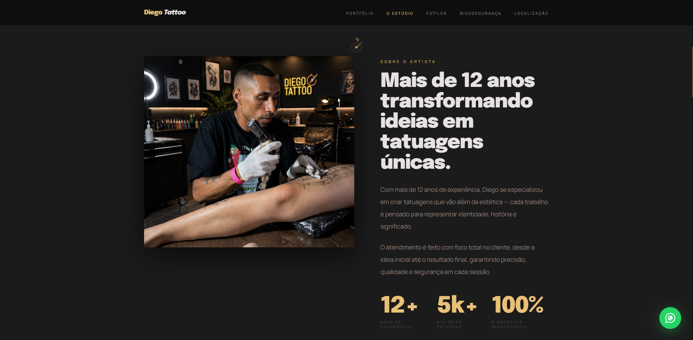
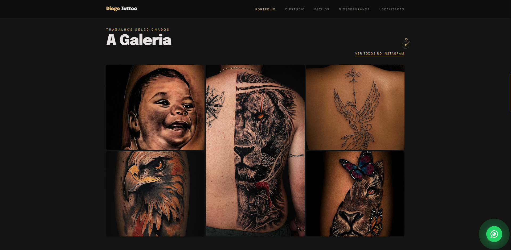
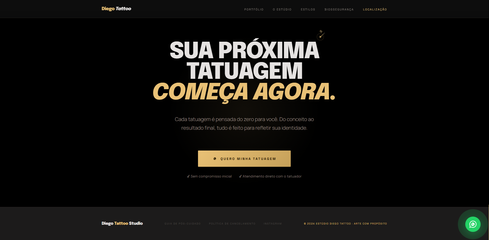

Diego Tattoo Studio
Premium positioning, conversion via WhatsApp, original visual identity

Context
Diego is a tattoo artist with over 12 years of experience, specialized in Realism, Blackwork and Fine Line. Despite a high-quality portfolio, his digital presence was nonexistent — referrals came exclusively through Instagram and word of mouth. The goal was to create a landing page that positioned the studio in the premium segment, built trust quickly, and converted visitors into bookings via WhatsApp.
Problem
Tattoo studios usually fail in one of two directions: generic visuals that don't communicate identity, or a beautiful portfolio with no conversion funnel. The challenge here was double — create a visual identity strong enough to communicate premium art, and build a page flow that actually sells.
Solution
A custom design system built from scratch — "The Noir Gallery" — with a near-black background, five surface layers for depth, and a single warm gold accent used with maximum restraint. Every section was structured around a conversion sequence: authority → trust → action.
Design System — The Noir Gallery
Before any component, I defined a complete design system in CSS custom properties — setting the visual language that would make every element feel intentional.
Palette
Near-black base to avoid harshness. Five layered surfaces create depth without borders. A single warm gold accent used with maximum restraint — maximum attention when present, invisible when not needed.
Typography — 3 fonts, 3 roles
Epilogue for headlines — condensed, 900 weight, italic for emotion. Manrope for body copy — humanist, 300 weight for sophistication. Space Grotesk for labels and UI elements. Each font has a single job and never competes with the others.
Grid & Spacing
Fixed 1120px container with responsive padding — aligned from mobile to ultrawide without extra media queries. 8pt baseline with fluid scale on sections; consistent rhythm at any viewport.
Custom cursor
A tattoo needle built in pure CSS — no external SVG. Shaft and machine body are rectangles rotated 45°, with the transform origin at the tip. Identity reinforcement without being literal.
Image Direction
The visual material delivered by the client wasn't compatible with the premium positioning of the brand. The solution required reconstructing the context — not just adjusting it.
Main photo — studio reconstruction
The original environment did not reflect the intended premium positioning. The scene was redesigned — replacing cold lighting and neutral walls with a darker, more controlled studio aesthetic aligned with the brand. Final adjustments were completed in Figma.
Portfolio gallery — cohesion across sessions
The tattoo photos arrived with variable quality — some compressed, others with lighting incompatible with the site's dark theme. Each image went through AI upscaling and exposure adjustment to maintain visual coherence. The result: a gallery where every piece looks photographed in the same studio.
Interface
About the Artist
Grid at 1.25fr / 1fr — deliberate proportion where the text leads and the photo confirms. Quantitative social proof (12 years, number of clients) as hard numbers, not adjectives.

Portfolio Gallery
Asymmetric 3-column grid with the central cell spanning 2 rows. The Blackwork lion dominates the center — deliberate visual hierarchy guiding the eye to the most technical piece first. Each image with manually calibrated object-position.

CTA Final
4-layer conversion structure: direct headline → concrete promise → first-person desire-oriented button → trust signals placed below the CTA, exactly where the hesitation happens.

Conversion Flow
Each section answers an implicit objection before the visitor articulates it.
Hero → Portfolio → Expertise
Value proposition first, then proof of quality, then technical authority. The visitor builds confidence progressively — not through claims, but through evidence.
Biosafety → Testimonials → CTA
A dedicated biosafety section that most studios don't publish online — a direct trust signal answering the safety question before it's asked. Social proof, then a final CTA that removes the last objection: "no initial commitment."
Support Modals — Removing Silent Objections
Two modals accessible from the footer address the unspoken questions that prevent bookings — before the visitor has to ask.
Post-care Guide
Structured across 4 phases — first 24h, days 2–7, weeks 2–4, and warning signs — it communicates that the studio relationship doesn't end at the session. A rare differentiator in the segment. The guide closes with a direct WhatsApp CTA, keeping the conversion path open even after the visit.
Cancellation Policy
Direct language covering deposit rules, deadlines and rescheduling options — eliminating the "what if I need to cancel?" anxiety before it stops the click. Both modals share the site's full visual system and close via X button, backdrop click or ESC key.
Technical Highlights
Scroll reveal without a library
Smooth entrance animations using IntersectionObserver with threshold and staggered delay via CSS utility classes — no GSAP or AOS dependency.
Responsiveness without a framework
Zero Bootstrap or Tailwind. Native CSS Grid, fluid typography via clamp(), surgical media queries only where truly necessary. Total bundle under 50kb excluding images.
Learnings
The biggest improvements in perceived quality came from copy adjustments — not visual redesigns. The CTA subtitle went through three versions before communicating both concreteness and emotion simultaneously. Copy is product.
Visual hierarchy is strategy. The decision to reduce saturation on the eagle and let the central lion dominate isn't aesthetic preference — it's deliberate attention guidance. And placing "no initial commitment" below the CTA (not at the top) works because it arrives exactly when the visitor already wants to click but still hesitates.
Stack
HTML5 · CSS3 (Custom Properties, Grid, Clamp) · JavaScript ES6+
Google Fonts · Google Maps Embed · WhatsApp API
Git · GitHub · Figma · Generative AI (image treatment and reconstruction)